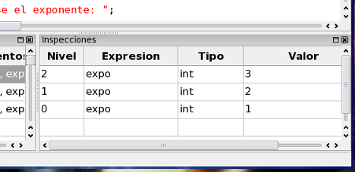

Ahora aparece un detalle más a tener en cuenta al usar la tabla de inspecciones. Se pueden encontrar distintas variables con el mismo nombre si estas están en distintos ámbitos (en este caso cada función define un ámbito o scope). Cuando se ingresa una inspección en la tabla, ésta se asocia al ámbito que se encuentre seleccionado (el que marca la flecha verde/amarilla del margen). Se puede observar en la tabla de inspecciones una columna llamada nivel que indica en qué nivel (en relación a la tabla de trazado inverso) está el ámbito de esa inspección.
Pruebe inspeccionar la variable expo en distintos ámbitos (seleccione el ámbito con doble click en la tabla de trazado inverso, y luego ingrese la expresión expo en la tabla de inspecciones).

Volver... Continuar...